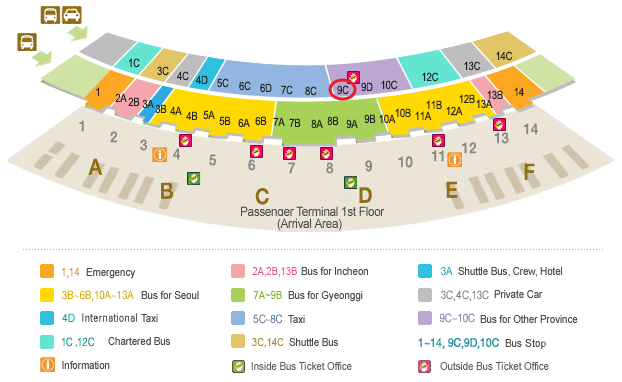

Go to Accommodation, Currency, Credit Cards, Tax, Gratuities (Tipping), Electricity, Transportation Travel Visa
Venue
Gunsan city is near to the West sea and located in Jeollabuk-do Province
in Republic of Korea. It is well known as a tumultuous historical sites,
such as Gunsan Customs Office, Chosun Bank Gunsan Brance, Warehouse of Korea Express Co.,Ltd etc.
Also, Gunsan, located on the edge of central western coast, as a waist of the Korean peninsula,
is in 2~3 hours away from anywhere in Korea (231km away from Seoul and 337km away from Busan).
It is also the central city of Saemangeum, the biggest reclamation project after the origination of
the country, and a port city of 114 years of history with various international routes,
located 563km away from Qingdao, China, which is the shortest distance in Korea.
For more information, visit Gunsan's official website.
For more information, visit Gunsan's official website.
The Saemangeum Seawall, located on the southwest coast of the Korean peninsula, is the world's
longest man-made dyke, measuring 33 kilometres.
It runs between two headlands, and separates the Yellow Sea and the former Saemangeum estuary.
The Gunsan Saemangeum Convention Center (GSCO), the core facility in Saemanguem, Gunsan,
Jeollabuk-do Province, has opened on July 4, 2014. A KRW 18 billion has been invested into the GSCO,
a three-story building.
The Center is composed of a convention hall with 2,000 seating capacity for events such as
exhibitions, EXPOs, international conferences, and seminars, 9 meeting rooms and company
support facilities.
<Google map>
Accommodation
* Deadline for hotel reservations is August 15, 2016.
· Main Hotel
| Ramada Gunsan Hotel | ||
|---|---|---|
| Description | Ramada Gunsan Hotel provides an extensive event space and easy access to area businesses and attractions. 100% non-smoking hotel offers a tranquil onsite Spa, a well-equipped fitness center and is walking distance from a pleasant jogging course, so that guests can stay refreshed and relaxed throughout their stay. Guest rooms provide free high-speed WiFi, air conditioning, mini fridge, in-room safe, flat screen HDTV, as well as coffee and tea facilities. | |
| Features & Amenities |
· Fitness Center · Restaurant Delivery Service · Conference Room · 100% Non-Smoking Property etc. · The welcome party will be held in this hotel. · Nearly located the lake and complex of shops and restaurants, affording nice opportunities for evening strolls, etc. · The bus service will be provided here to conference hall. |
|
| Restaurants | The restaurant offers plenty of delicious delights from traditional Korean dishes to western style cuisine, along with a handpicked selection of foods offered on our room service menu. | |
| Charge |
· Standard : KRW 90,000 (Breakfast not included) · Deluxe : KRW 100,000 (Breakfast not included) · Breakfast : KRW 13,000 |
|
| Location |
400, Daehak ro, Gunsan, Jeolla Buk-do, Korea · TEL : 82-63-443-8000 · FAX : 82-63-442-2111 |
|
| Reservation |
Please fill out the attached reservation form and send it to the hotel directly by E-mail or Fax. * Note that the use of other booking platforms does not guarantee the reduced price. |
|
· Sub Hotel
| Best Western Hotel (4-star hotel) | ||
|---|---|---|
| Description | The Best Western Gunsan Hotel provides an exceptional stay for everyone from family vacationers to those travelling on business. The hotel is suitable for both short or long-term stays, and the rooms are designed to ultimate comfort and fully equipped to meet all needs of business and leisure travelers. Relax and unwind in our rooms with views of Saemangeum Seawall and the Yellow Sea. Also, Those travelling on business purposes love the fact that the hotel is located within 20 minutes of Gunsan Industrial Zone. Many corporate offices are located and you can enjoy convenient access to GM, Chevrolet, and World Vision Korea office. | |
| Features & Amenities |
· Pool · Fitness Center · Restaurant Onsite · Hot Tub · Eco-Friendly etc. · This hotel is very close to conference hall. |
|
| Restaurants | Patio, on premises, buffet, international, open for: breakfast, lunch, hours 7:00 a.m. to 3:00 p.m. 4.50 kilometer(s) from Gunsan Fishery Market, full service, seafood, open for: lunch, dinner, hours 9:00 a.m. to 6:00 p.m. Moderate price. | |
| Charge |
· Twin / Double : KRW 100,000 (Discounted rate, Breakfast not included) · Breakfast : KRW 14,000 |
|
| Location |
435(Oshikdo-dong), Saemangeum Buk-ro, Gunsan, Jeolla Buk-do, Korea · TEL : 82-63-469-1234 · FAX : 82-63-469-1220 |
|
| Reservation |
Please fill out the attached reservation form and send it to the hotel directly by E-mail or Fax. * Note that the use of other booking platforms does not guarantee the reduced price. |
|
Currency
The unit of Korean currency is the Won (￦/KRW). Coin denominations are ￦10, ￦50, ￦100 and ￦500.
Banknotes are ￦1,000, ￦5,000, ￦10,000 and ￦50,000.
Currency exchange: Foreign banknotes and traveler's check can be exchanged at foreign exchange banks and other authorized moneychangers. ATM machines are available at banks and major shopping centers.
Currency exchange: Foreign banknotes and traveler's check can be exchanged at foreign exchange banks and other authorized moneychangers. ATM machines are available at banks and major shopping centers.
Credit Cards
Diners Club, Visa, American Express and MasterCard are widely accepted at major hotels, shops and restaurants in the larger cities.
Check with your credit card company for details of merchant acceptability and other services which may be available.
Tax
Value-added tax (VAT) is levied on most goods and services at a standard rate of 10% and is included in the retail price.
In tourist hotels, this 10% tax applies to meals and other services and is added into the bill.
Gratuities (Tipping)
Tipping is not a traditional custom in Korea. A 10% service charge will be added to your bill at all tourist restaurants and hotels.
It is also not necessary to tip a taxi driver unless he assists you with luggage or provides an extra service.
Electricity
In Korea, electrical outlets are operated at 220 volt only.
Overseas delegates bringing laptop computers and other electrical appliances are advised to check whether a transformer is required.
Transportation
You can get to the Gunsan Bus Terminal by Limousine bus at Bus stop No. 9C, Incheon International Airport.
Bus stop No. 9C is located in outside of airport building.
· Limousine bus Schedule at Gunsan Intercity Bus Terminal
(You may prepare the bus fare in Korean Won or purchase the bus ticket at the bus ticket office at the airport in advance.)
Bus stop No. 9C is located in outside of airport building.

· Limousine bus Schedule at Incheon International Airport
| Route Name | Bus Type | Station | Bus Stop No. | Time line of departing Buses |
Travelling Time | Fare |
|---|---|---|---|---|---|---|
| Gunsan (Jeonra) | Limousine | Songdo U Transfer Center - Daeya - Gunsan | 1st Floor 9C | 09:50, 11:00, 14:40, 16:40, 20:40, 21:40 | 200 min. | KRW 23,700 |
| Gunsan (Jeonra) | Limousine | Songdo U Transfer Center - Daeya - Gunsan - Iksan | 1st Floor 9C | 08:20, 12:50, 15:40, 17:10, 18:10, 19:00 | 200 min. | KRW 23,700 |
· Limousine bus Schedule at Gunsan Intercity Bus Terminal
| Route Name | Bus Type | Station | Bus Stop No. | Time line of departing Buses |
Travelling Time | Fare |
|---|---|---|---|---|---|---|
| Incheon International Airport | Limousine | Last station is Incheon International Airport. | No. 13, No. 14 | 03:30, 04:10, 05:10, 06:10, 07:10, 08:10, 09:10, 10:10, 13:10, 14:30, 15:30, 16:30 | 200 min. | KRW 23,700 |
Travel Visa
Any foreign visitors wishing to enter the Republic of Korea must have a valid passport and obtain a Korean visa before the visitation.
However, people of 90 countries who wish to visit Korea temporarily are permitted to enter without a visa according to visa-exemption agreements or in accordance with principles reciprocity or national interest.
More information about visa-free entries for foreigners, For more information about the visa, please, contact the website.
An official letter of invitation will be sent to any registrant upon request. However, this invitation implies no obligation for visa. If you need a letter of invitation for participating in the ICAMDATA 2016, please email to the Secretariat at icamdata2016@nfri.re.kr.
Your invitation letter request must include the following details:
1. Participant's full name
2. Nationality
3. Name of the Affiliation (University, Company, etc.)
4. Department
5. Address of the Affiliation (University, Company, etc.)
* Countries under Visa Exemption Agreement (65 Countries)
An official letter of invitation will be sent to any registrant upon request. However, this invitation implies no obligation for visa. If you need a letter of invitation for participating in the ICAMDATA 2016, please email to the Secretariat at icamdata2016@nfri.re.kr.
Your invitation letter request must include the following details:
1. Participant's full name
2. Nationality
3. Name of the Affiliation (University, Company, etc.)
4. Department
5. Address of the Affiliation (University, Company, etc.)
| Type | Continents | Countries |
|---|---|---|
| Ordinary, Diplomatic, Official passport |
Asia (4 countries) |
Malaysia, New Zealand, Singapore, Thailand |
| America (25 countries) |
Antigua and Barbuda, Bahamas, Barbados, Brazil, Chile, Colombia, Commonwealth of Dominica, Costa Rica, Dominican Republic, El Salvador, Guatemala, Haiti, St. Vincent Jamaica, Mexico, Nicaragua, Panama, Peru, St. Lucia, St. Kitts, Nevis, Suriname, Trinidad-Tobago, Venezuela, Uruguay, Grenada, Saint Vincent and the Grenadines | |
| Europe (31 countries) |
Austria, Belgium, Bulgaria, Czech, Denmark, Estonia, Finland, France, Germany, Greece, Hungary, Iceland, Ireland, Italy, Latvia, Liechtenstein, Lithuania, Luxembourg, Malta, Netherlands, Norway, Poland, Portugal, Romania, Slovakia, Spain, Sweden, Switzerland, Turkey, United Kingdom, Russia | |
| Africa & Middle East (5 countries) |
Israel, Lesotho, Liberia, Morocco, Tunisia |
* Nationals of countries or regions allowed for visa-free entry (50 countries)
| Continents | Countries |
|---|---|
| Asia (6 countries) |
Brunei, Hong Kong, Indonesia, Japan, Macau, Taiwan |
| America (7 countries) |
Argentina, Canada, Ecuador, Guyana, Honduras, Paraguay, United States, |
| Europe (11 countries) |
Albania, Andorra, Bosnia-Herzegovina, Croatia, Cyprus, Monaco, Montenegro, San Marino, Serbia, Slovenia, Vatican |
| Oceania (13 countries) |
Australia, Fiji, Guam, Kiribati, Marshall Islands, Micronesia, Nauru, New Caledonia, Palau, Samoa, Solomon Islands, Tonga, Tuvalu |
| Africa &Middle East (13 countries) |
Bahrain, Egypt, Kuwait, Lebanon, Mauritius, Oman, Qatar, Saudi Arabia, Seychelles, South Africa, Swaziland, United Arab Emirates, Yemen |